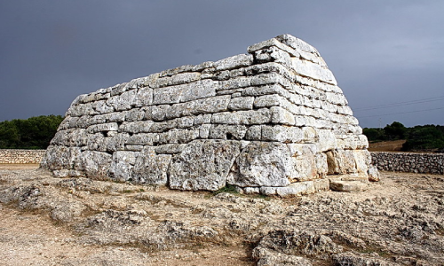

La Naveta Des Tudons
Escrito por Karina Izquierdo - 21/1/2025
Se trata de una tumba colectiva de la época talayótica, aproximadamente datada entre el 1200 y el 750 a.C. Su nombre proviene de su forma, que recuerda a la proa de un barco invertido. La construcción de la naveta se realizó con grandes bloques de piedra caliza colocados en hileras horizontales sin ningún tipo de argamasa.
Tiene una longitud de unos 14 metros, una anchura máxima de 6.4 metros y una altura de alrededor de 4 metros. En el interior de la naveta se han encontrado restos óseos de aproximadamente 100 individuos, junto con objetos funerarios como piezas de cerámica, botones de hueso y bronce, y algunos colgantes. Considerada uno de los monumentos prehistóricos mejor conservados del Mediterráneo, la Naveta des Tudons es un testimonio del ingenio y habilidad constructiva de las sociedades talayóticas menorquinas.
La Naveta des Tudons es el monumento funerario más conocido de Menorca y se trata de un tipo de tumba que solo se encuentra en la isla. Está construido con técnica ciclópea, es decir, con piedras de dimensiones medianas encajadas en seco, sin la ayuda de mortero. Durante las excavaciones arqueológicas efectuadas en la década de los 60 del siglo pasado, se hallaron los esqueletos desordenados de cien individuos de ambos sexos y de todas las edades, gran parte de los cuales fueron datados en el siglo IX a.C. Los cuerpos, aún estando en desorden, iban acompañados de los ajuares personales con los que fueron enterrados: brazaletes de bronce, botones de hueso y alguna arma de bronce. También se hallaron ollitas, vasos de cerámica y un tapón de hueso decorado, que formaba parte de un estuche donde se guardaban cabellos de alguno de los difuntos, que es un tipo de ritual funerario habitual de esta época.
La forma de la naveta, que recuerda una nave invertida, es la que proporcionó el nombre del monumento. La entrada de ésta lleva a un pequeño corredor que conduce a la cámara superior y a una segunda puerta que lleva a la inferior. El piso intermedio y la cubierta superior están construidos con grandes losas que actúan como vigas. La Naveta des Tudons es considerada uno de los monumentos prehistóricos mejor conservados del Mediterráneo y es el edificio más antiguo de Europa. Fue utilizada para entierros colectivos y es un testimonio del ingenio y habilidad constructiva de las sociedades talayóticas menorquinas.